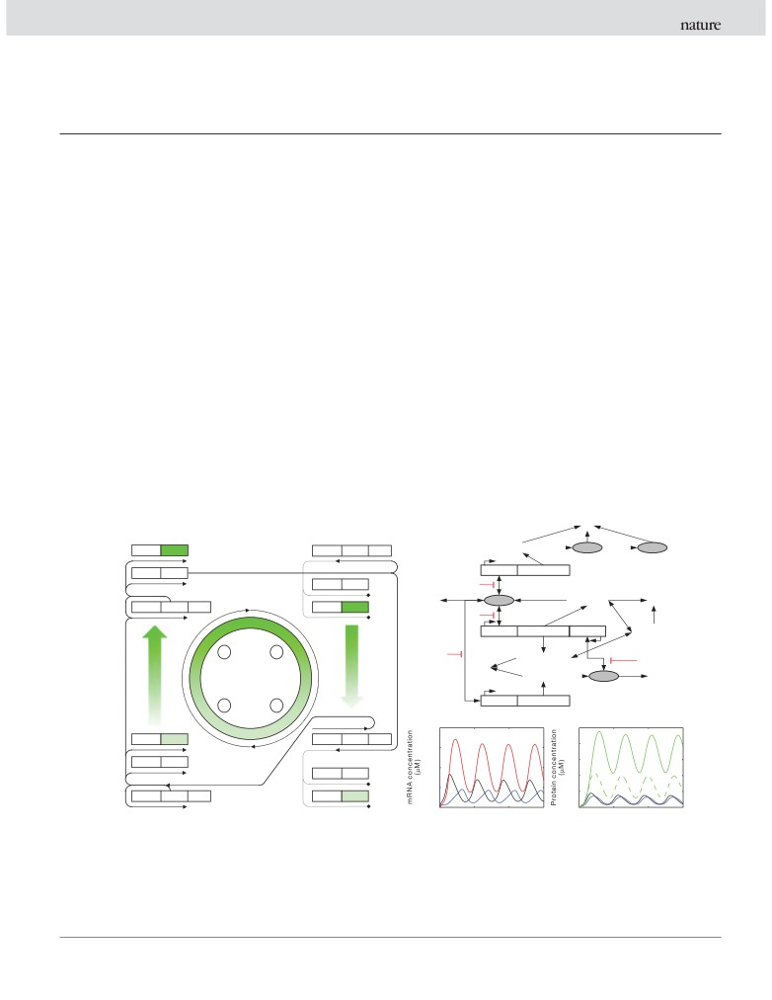
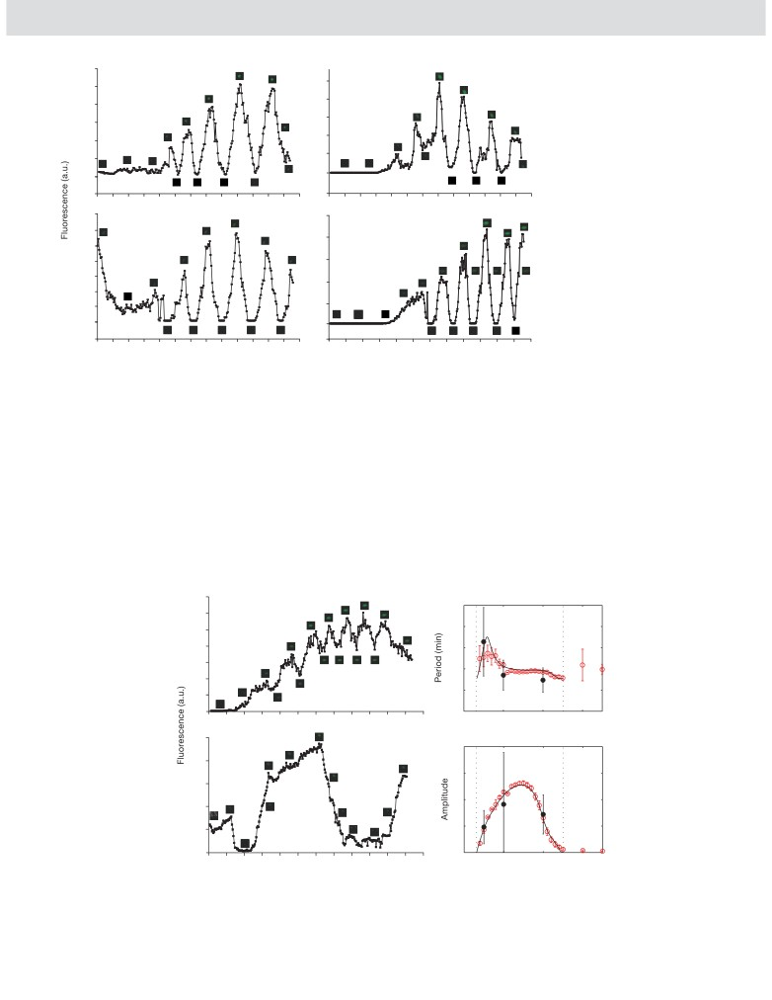

Vol 457 |15 January 2009 |doi:10.1038/nature07616
LETTERS
A tunable synthetic mammalian oscillator
Marcel Tigges1, Tatiana T. Marquez-Lago1,2,3, Jörg Stelling1,2,3 & Martin Fussenegger1
Autonomous and self-sustained oscillator circuits mediating the
Synthetic gene circuits that emulate the expression dynamics of
periodic induction of specific target genes are minimal genetic
living systems provide new insights into the connectivity of genes and
time-keeping devices found in the central and peripheral circadian
proteins in the postgenomic era6 and they advance our understand-
clocks1,2. They have attracted significant attention because of their
ing of complex control networks. Circadian pacemakers7,8 are of
intriguing dynamics and their importance in controlling critical
particular interest because they coordinate many periodic physio-
repair3, metabolic4 and signalling pathways5. The precise molecular
logical activities. The mammalian circadian clock consists of a central
mechanism and expression dynamics of this mammalian circadian
pacemaker in the suprachiasmatic nuclei of mammalian brains9, with
clock are still not fully understood. Here we describe a synthetic
subsidiary oscillators in most peripheral cell types4,5,10. In contrast to
mammalian oscillator based on an auto-regulated sense-antisense
neurons in the suprachiasmatic nuclei, peripheral oscillators damp
transcription control circuit encoding a positive and a time-delayed
rapidly when disconnected from remote control by the suprachias-
negative feedback loop, enabling autonomous, self-sustained and
matic nuclei10. However, both oscillators rely on a very similar gene
tunable oscillatory gene expression. After detailed systems design
circuitry that involves a set of transcriptional repressors (CRY and
with experimental analyses and mathematical modelling, we moni-
PER) and activators (BMAL1 and CLOCK) connected by mutual
tored oscillating concentrations of green fluorescent protein with
feedback11. Previously designed simple synthetic gene networks in
tunable frequency and amplitude by time-lapse microscopy in real
bacteria showed self-sustained12, damped13 or metabolically con-
time in individual Chinese hamster ovary cells. The synthetic mam-
trolled oscillations14, but those oscillators lacked robustness and/or
malian clock may provide an insight into the dynamics of natural
tunability. In mammalian cells, even synthetic clock replicas using
periodic processes and foster advances in the design of prosthetic
natural components and network design have not provided oscil-
networks in future gene and cell therapies.
lating transgene expression15 as observed for reporter genes plugged
Ø
D
D
D
a
b
TL
Folding
PhCMV*-1
dGFP
PhCMV*-1
tTA
PPIR
GFP sense
GFPI
GFPA
TC
PhCMV*-1
PIT
P
hCMV*-1
dGFP
PhCMV*-1
PIT
Tc
D
TL
D
Ø
tTA
tTA sense
Ø
PhCMV*-1
tTA
PPIR
PhCMV*-1
dGFP
Tc
TC
D
PhCMV*-1
tTA
PPIR
tTA mRNA
duplex
TC
2
3
Tc
D
tTA antisense
PI
Ø
TL
D
D
PIT sense
PIT
Ø
TC
PhCMV*-1
PIT
1
4
c
d
0.20
0.5
pMT100
PhCMV*-1
dGFP
PhCMV*-1
tTA
PPIR
0.4
0.15
pMT36
PhCMV*-1
PIT
0.3
0.10
PhCMV*-1
PIT
0.2
0.05
0.1
pMT35
PhCMV*-1
tTA
PPIR
PhCMV*-1
dGFP
0
0
0
20
40
60
0
20
40
60
Time (h)
Time (h)
Figure 1 | Mammalian clock components and predicted oscillation
reactions; double-headed arrows, reversible reactions; Ø, sinks for
dynamics. a, Core mammalian oscillator. Autoregulated PhCMV*-1-driven
degradation processes; dGFP, destabilized GFP; Tc, tetracycline; PI,
tTA transcription triggers increasing expression of sense tTA (pMT35),
pristinamycin I; GFPI, unfolded inactive GFP; GFPA, folded active GFP; TC,
UbV76-GFP (pMT100) and PIT (pMT36) (1). As UbV76-GFP and PIT levels
transcription; TL, translation; D, degradation. c, d, Model predictions for the
reach a peak (2), PIT steadily induces PPIR-driven tTA anti-sense expression
reference parameter set (plasmid ratios 1:1:1, no antibiotics) with mRNA
(3), resulting in a gradual decrease in sense tTA, PIT and UbV76-GFP (4).
concentrations (c) (black, tTA; blue, PIT; red, tTA-sense-antisense duplex)
b, Intracellular processes considered in the mathematical model.
and protein concentrations (d) (black, tTA; blue, PIT; dashed green,
Abbreviations and symbols are as follows: single-headed arrows, irreversible
unfolded GFP; solid green, active GFP).
1Department of Biosystems Science and Engineering, ETH Zurich, Mattenstrasse 26, CH-4058 Basel, Switzerland.2Institute of Computational Science and3Swiss Institute of
Bioinformatics, ETH Zurich, CH-8092 Zurich, Switzerland.
309
©2009
Macmillan Publishers Limited. All rights reserved
LETTERS
NATURE |Vol 457 |15 January 2009
into the natural circadian clock of peripheral fibroblasts10. This sug-
mammalian cells19. The model predicted that, even when the ratios
gested that important details on how cellular clocks operate are still
of oscillator components were held constant, absolute plasmid con-
unknown.
centrations could be used to modify the period and amplitude of the
Our synthetic core oscillator (Fig. 1a) consists of a sense-antisense
oscillations
(Fig.
2a, b). More intuitively, destabilization of the
expression unit encoding the tetracycline-dependent transactivator
reporter was predicted to increase the relative signal amplitude
(tTA)16. tTA manages its sense transcription by means of an auto-
(Fig. 2b, c). The model-based analysis therefore pointed to reporter
regulated feedback loop controlled by the tTA-specific tetracycline-
stability and gene dosage as key variables for optimizing the circuit.
responsive promoter (PhCMV*-1; PhCMV*-1RtTA; pMT35). Antisense
To reveal any rhythmic transcription control in single cell-based
transcription of tTA is driven by the pristinamycin-responsive pro-
time-lapse microscopy studies, we implemented a second-generation
moter (PPIR; PhCMV*-1RtTArPPIR; pMT35) and triggered by the
oscillator by functionally plugging in a PhCMV*-1-driven GFP variant
pristinamycin-dependent transactivator (PIT)17, whose expression
engineered for a decreased half-life of a few minutes (UbV76-GFP;
is induced by PhCMV*-1
and thus feedback controlled by tTA
pMT100, PhCMV*-1RUbV76-GFP). Co-transfection of pMT35
(PhCMV*-1RPIT; pMT36). tTA levels can be examined by tTA-
(PhCMV*-1RtTArPPIR) and pMT100 resulted in a steady increase
specific PhCMV*-1-driven expression of a fluorescent protein. For
in green fluorescence, indicating that sense tTA was co-inducing its
reasons given below, we used either the destabilized enhanced yellow
own expression as well as that of UbV76-GFP (Supplementary
fluorescent protein (d2EYFP; PhCMV*-1Rd2EYFP; pBP282 (ref. 18);
Fig. 3a). We observed a similar increase in UbV76-GFP expression after
see Supplementary Information) or the green fluorescent protein
co-transfection of pMT100, pMT35 and pMT36 (PhCMV*-1RPIT)
(GFP) variant UbV76-GFP
(PhCMV*-1RUbV76-GFP; pMT100),
when transfected populations were cultivated in the presence of PI,
which have different half-lives. The network can be fine-tuned by
which inactivated PIT and prevented tTA antisense expression
modulating sense expression of tTA and PIT by tetracycline and by
(Supplementary Fig. 3b). When the same population was exposed to
adjusting tTA antisense transcription by pristinamycin I (PI). In the
tetracycline, UbV76-GFP expression was gradually shut off as a result of
absence of antibiotics PhCMV*-1 and PPIR are fully induced.
tTA inactivation (Supplementary Fig. 3c). UbV76-GFP expression was
To analyse whether the circuit could function as a genetic oscillator,
also shut off when co-transfecting pMT100 and pMT35 with the con-
we developed a first deterministic mathematical model
(see
stitutive PIT expression vector pMF156 (PhCMVRPIT)17, which con-
Supplementary Information). It describes in a simplified yet mecha-
firmed that PIT-mediated induction of PPIR-driven tTA antisense
nistic fashion the processes shown in Fig. 1b. Biologically plausible
expression outcompetes autoregulated tTA expression
(Supple-
model parameterization demonstrated the oscillatory capacity of the
mentary Fig. 3d). The individual feedback loops therefore operated
mammalian circuit (Fig. 1c, d). It can undergo autonomous and self-
as expected.
sustained oscillation of tTA expression by alternating the induction of
To test the complete synthetic oscillator we co-transfected pMT35,
tTA by means of its autoregulated feedback (tTA induces its own
pMT36 and pMT100 at various ratios. Ratios of 2:1:1 or 3:1:1 resulted
expression), with time-delayed repression of tTA mediated by the
in imbalanced expression of clock components and constant express-
two-level tTA antisense transcription cascade (tTA triggers PIT express-
ion of UbV76-GFP (Supplementary Fig. 3e, f). When pMT35, pMT36
ion; PIT then induces tTA antisense expression). The antisense-
and pMT100 were co-transfected at equimolar ratios (100 ng each)
mediated decrease in tTA levels triggers the recovery of tTA sense
into Chinese hamster ovary (CHO-K1) cells cultivated without anti-
expression and, hence, a second clock cycle.
biotics, we observed spontaneous, autonomous, self-sustained and
A first oscillator implementation with the d2EYFP reporter pro-
robust oscillations of UbV76-GFP fluorescence in single cells (Fig. 3
vided evidence that the basic design could function in vivo (see
and Supplementary Video). The oscillations could only be disturbed
Supplementary Information). For detailed circuit design, we adapted
deliberately by adding either tetracycline or PI (Supplementary Fig.
the model parameters to the experimental d2EYFP time courses from
3b, c), or by constitutive PIT expression (Supplementary Fig. 3d).
oscillating cells and controls. The refined model enabled us to make a
Fast Fourier transformation-based analysis
(see Supplementary
semiquantitative description of the circuit behaviour by capturing all
Information) of at least 20 CHO-K1 cells with oscillating UbV76-
qualitative dynamic features, but not all quantitative aspects
GFP expression collected from four independent experiments
(Supplementary Fig. 1 and Supplementary Information). With the
showed that oscillations occur at a frequency of
170671 min
experimentally constrained model, we conducted simulation studies
(mean 6 s.d.), with an amplitude of 1.81 6 1.96 fluorescence units
with varying model parameters and/or inputs to establish critical
(Fig. 3). The oscillations of the synthetic clock showed substantial
design features. The model predicted that the circuit should be robust
variability between individual cells, even adjacent ones, suggesting
to variations in protein and messenger RNA degradation and that the
that there is no functional coupling between oscillating cells.
antibiotics may switch the oscillator on or off but not tune its beha-
Next, to check the model predictions on gene-dosage-dependent
viour gradually (Supplementary Fig. 2 and Supplementary Notes).
oscillator behaviour, we varied the DNA doses used for transfection.
Moreover, model analysis suggested that the synthetic network could
In comparison with the oscillations generated by co-transfection of
sustain autonomous oscillations only at specific relative levels of the
100 ng pMT35, pMT36 and pMT100 (Fig. 3), co-transfection of
individual clock components (Fig. 2a, b). These levels are influenced
200 ng of each clock vector resulted in oscillation with a higher
by the relative amounts of expression vectors used to transfect
frequency
(period of
147658 min) but a reduced amplitude
24
1
1.0
2.0
2.0
2.0
a
b
c
22
0.8
0.8
20
0.6
0.6
1.0
18
1.0
1.0
0.4
0.4
16
14
0.2
0.2
0.5
0.5
0.5
12
0
0
0.5
1.0
2.0
0.5
1.0
2.0
0.5
1.0
2.0
Relative dosage of pMT35
Figure 2 | Systems behaviour depending on gene dosage as predicted by
function of relative plasmid concentrations. In a and b the reporters are
the adapted model with variable transfection times. Panels show the
d2EYFP; in c the reporter is UbV76-GFP, a variant with a decreased half-life.
colour-coded oscillator period (a; the colour bar gives the period in hours)
The dashed line denotes a 1:1 plasmid ratio. No oscillations were observed in
and relative amplitude (b, c; normalized by maximal fluorescence) as a
white areas.
310
©2009
Macmillan Publishers Limited. All rights reserved

NATURE |Vol 457 |15 January 2009
LETTERS
3.0
Figure 3 | Validation of the
2.5
mammalian oscillator by time-
2.5
lapse fluorescence analysis of
2.0
2.0
transfected CHO-K1 cells. CHO-
1.5
K1 cells were co-transfected at
1.5
equimolar ratios (100 ng each) with
1.0
1.0
pMT35 (PhCMV*-1RtTArPPIR),
0.5
pMT36 (P
hCMV*-1RPIT) and
0.5
pMT100 (P
hCMV*-1RUbV76-GFP)
0
0
and cultivated in the absence of
antibiotics. The same four
-0.5
-0.5
0
200
400
600
800
1,000
1,200
0
200
400
600
800
1,000
1,200
independent CHO-K1 cells showing
1.4
2.5
oscillating UbV76-GFP are also
shown, circled, in the
1.2
2.0
Supplementary Video.
1.0
0.8
1.5
0.6
1.0
0.4
0.2
0.5
0
0
–0.2
-0.5
0
200
400
600
800
1,000
1,200
0
200
400
600
800
1,000
1,200
Time (min)
(1.4460.74 fluorescence units) (Fig. 4a), as predicted qualitatively
revealed a previously unknown correlation between oscillation fre-
by the model (Fig. 2a-c). When the plasmid doses were decreased to
quency and gene dosage of clock components.
50 ng each, the oscillation period increased (328 6 162 min) and the
Variable timings of plasmid uptake constitute a major source of
amplitude decreased
(0.9660.63
fluorescence units)
(Fig.
4b),
cell-to-cell variability of GFP expression. However, through the
which confirms the model predictions on the tunability of the syn-
alignment of single-cell trajectories by using simplified models (see
thetic clock. Quantitative statistical analysis of single-cell data for
Supplementary Information), we estimated that GFP expression in
various plasmid dosages revealed the dependences between gene
control experiments varied by only about 20%. Previous studies
dosage and oscillator frequency and amplitude shown in Fig. 4c, d.
pointed to stochasticity, or ‘noise’, as a principal reason for limiting
We used these experimental data together with the control experi-
accuracy in synthetic networks20,21. To estimate the impact of
ments to establish a structurally refined mathematical model that
molecular noise on the mammalian oscillator, we established a
could describe all experimental data quantitatively (see Supple-
detailed stochastic model
(see Supplementary Information).
mentary Information). This deterministic model predicted non-
Stochastic simulations show that, at least for low plasmid dosages,
intuitive relations between gene dosage and oscillator behaviour
noise contributes substantially to the observed cell-to-cell variability
(Fig. 4c, d). Thus, our model-supported synthetic biology approach
in the period (Fig. 4c, d). The model predicts that not all cells will
3.5
a
c
500
3.0
400
2.5
2.0
300
1.5
200
1.0
100
0.5
0
0
1
2
3
0
200
400
600
800
1,000
1,200
2.5
b
d
4
2.0
3
1.5
2
1.0
1
0.5
0
0
1
2
3
0
200
400
600
800
1,000
1,200
Relative plasmid dosage
Time (min)
Figure 4 | Tunable oscillating gene expression in mammalian cells.
symbols; a relative plasmid dosage of one corresponds to 100 ng of DNA)
Examples of oscillating CHO-K1 cells co-transfected at equimolar ratios
and predictions from the refined deterministic model (black lines) and from
(a, 200 ng each; b, 50 ng each) with pMT35, pMT36 and pMT100 in
stochastic simulations (red symbols) for a similar number of oscillations.
cultivation without antibiotics. c, d, Statistical data analysis and model
Dotted lines indicate regions of oscillations for the deterministic model.
predictions for oscillator period (c) and amplitude (d). Experimental data
Error bars indicate s.d.
from at least 20 single-cell trajectories per plasmid dosage (filled black
311
©2009
Macmillan Publishers Limited. All rights reserved
LETTERS
NATURE |Vol 457 |15 January 2009
oscillate under these conditions. In addition, we find low-amplitude
5.
Covert, M. W., Leung, T. H., Gaston, J. E. & Baltimore, D. Achieving stability of
lipopolysaccharide-induced NF-kB activation. Science 309, 1854-1857 (2005).
noise-induced oscillations for high plasmid dosages that are similar
6.
Hasty, J., McMillen, D. & Collins, J. J. Engineered gene circuits. Nature 420,
to those predicted for simplified oscillators21. This underlines the
224-230 (2002).
importance of stochastic effects on the quantitative behaviour of
7.
Reppert, S. M. & Weaver, D. R. Forward genetic approach strikes gold: cloning of a
systems with complicated dynamics22.
mammalian clock gene. Cell 89, 487-490 (1997).
8.
Storch, K. F. et al. Extensive and divergent circadian gene expression in liver and
Prokaryotic clocks that were constructed previously12-14 employed
heart. Nature 417, 78-83 (2002).
only transcription control elements, and it was not obvious whether a
9.
Reppert, S. M. & Weaver, D. R. Coordination of circadian timing in mammals.
post-transcriptional control component in a mammalian circuit
Nature 418, 935-941 (2002).
could enable autonomous and self-sustained oscillations. The recent
10.
Nagoshi, E. et al. Circadian gene expression in individual fibroblasts: cell-
discovery of antisense clock-gene transcripts suggests that mecha-
autonomous and self-sustained oscillators pass time to daughter cells. Cell 119,
693-705 (2004).
nisms of gene regulation operating through antisense RNA may also
11.
Gekakis, N. et al. Role of the CLOCK protein in the mammalian circadian
be integral to the circadian clockwork and be more important than
mechanism. Science 280, 1564-1569 (1998).
previously anticipated23. Using a novel network design combining an
12.
Atkinson, M. R., Savageau, M. A., Myers, J. T. & Ninfa, A. J. Development of
autoregulated positive transcription feedback with a two-step tran-
genetic circuitry exhibiting toggle switch or oscillatory behavior in Escherichia coli.
Cell 113, 597-607 (2003).
scription cascade producing non-coding antisense RNA for trans-
13.
Elowitz, M. B. & Leibler, S. A synthetic oscillatory network of transcriptional
lation control, we achieved autonomous, self-sustained and tunable
regulators. Nature 403, 335-338 (2000).
oscillation in mammalian cells. Besides providing insight into the
14.
Fung, E. et al. A synthetic gene-metabolic oscillator. Nature 435, 118-122
dynamics of mammalian clocks, a more profound understanding
(2005).
15.
Chilov, D. & Fussenegger, M. Toward construction of a self-sustained clock-like
of molecular time-keeping devices could foster therapeutic oppor-
expression system based on the mammalian circadian clock. Biotechnol. Bioeng.
tunities in clock-related pathologies such as Huntington’s24 and
87, 234-242 (2004).
Alzheimer’s25 diseases.
16.
Gossen, M. & Bujard, H. Tight control of gene expression in mammalian cells by
tetracycline-responsive promoters. Proc. Natl Acad. Sci. USA 89, 5547-5551
METHODS SUMMARY
(1992).
Design of expression vectors. pcDNA3.1-UbV76-GFP enables the constitutive
17.
Fussenegger, M. et al. Streptogramin-based gene regulation systems for
expression of the destabilized GFP variant UbV76-GFP26. pMT35
mammalian cells. Nature Biotechnol. 18, 1203-1208 (2000).
18.
Kramer, B. P. & Fussenegger, M. Transgene control engineering in mammalian
(PhCMV*-1RtTArPPIR) contains an expression unit for the PhCMV*-1-driven
cells. Methods Mol. Biol. 308, 123-143 (2005).
sense and PPIR-driven antisense expression of tTA17,27. pMT35 was constructed
19.
Rossmanith, W., Chabicovsky, M., Herkner, K. & Schulte-Hermann, R. Cellular
by replacing p27Kip1 of pMF226 (ref. 27) with tTA of pSAM200 by using EcoRI/
gene dose and kinetics of gene expression in mouse livers transfected by high-
HindIII. pMT36 (PhCMV*-1-PIT), engineered for PhCMV*-1-driven PIT17 express-
volume tail-vein injection of naked DNA. DNA Cell Biol. 21, 847-853 (2002).
ion, was constructed by elimination of the NotI fragment from pMF125 (ref. 28).
20.
Rosenfeld, N., Young, J. W., Alon, U., Swain, P. S. & Elowitz, M. B. Gene regulation
pMT100 (PhCMV*-1-UbV76-GFP), enabling the tetracycline-responsive express-
at the single-cell level. Science 307, 1962-1965 (2005).
ion of UbV76-GFP, was designed by inserting UbV76-GFP, excised from
21.
Vilar, J. M., Kueh, H. Y., Barkai, N. & Leibler, S. Mechanisms of noise-resistance in
pcDNA3.1-UbV76-GFP by NheI/NotI, into the corresponding sites of pMF111
genetic oscillators. Proc. Natl Acad. Sci. USA 99, 5988-5992 (2002).
(ref. 29). pMF156 encodes the constitutive expression of PIT (PhCMVRPIT)17.
22.
Di Ventura, B., Lemerle, C., Michalodimitrakis, K. & Serrano, L. From in vivo to in
silico biology and back. Nature 443, 527-533 (2006).
Cell culture, transfection and gene regulation. CHO-K1 (ATCC CCL61) cells
23.
Crosthwaite, S. K. Circadian clocks and natural antisense RNA. FEBS Lett. 567,
were cultivated in ChoMaster HTS (Cell Culture Technologies) supplemented
49-54 (2004).
with 5% fetal calf serum (lot no. P231902; Pan Biotech GmbH). Cells were
24.
Morton, A. J. et al. Disintegration of the sleep-wake cycle and circadian timing in
cultivated at
30 uC in a humidified atmosphere containing 5% CO2, and
Huntingdon’s disease. J. Neurosci. 25, 157-163 (2005).
35,000 cells were transfected with up to 1.2 mg of plasmid mixtures by using
25.
Wu, Y. H. et al. Pineal clock gene oscillation is disturbed in Alzheimer’s disease,
the FuGENE6 transfection reagent
(lot no.
93535720; Roche Molecular
due to functional disconnection from the ‘master clock’. FASEB J. 20, 1874-1876
Biochemicals).
(2006).
Fluorescence imaging. Time-lapse fluorescence microscopy was performed
26.
Johnson, E. S., Ma, P. C., Ota, I. M. & Varshavsky, A. A proteolytic pathway that
with an inverted fluorescent microscope (DMI 6000B; Leica Microsystems)
recognizes ubiquitin as a degradation signal. J. Biol. Chem. 270, 17442-17456
(1995).
equipped with an incubation chamber, a DFC350FX R2
digital camera
27.
Fux, C. et al. Streptogramin- and tetracycline-responsive dual regulated
(Leica), a 103 objective (Obj. HC PL FL 103/0.30 PH1 -/D 11.0; Leica) and a
expression of p27Kip1 sense and antisense enables positive and negative growth
488-nm/509-nm (B/G/R) UbV76-GFP-specific excitation/emission filter set.
control of Chinese hamster ovary cells. Nucleic Acids Res. 29, e19 (2001).
Time-lapse videos were produced with the LAS AF imaging software
28.
Moser, S. et al. Dual-regulated expression technology: a new era in the adjustment
(FW4000-TZ; Leica) set to exposure times of 590-960 ms (auto-controlled
of heterologous gene expression in mammalian cells. J. Gene Med. 3, 529-549
depending to the mean fluorescence intensity level) every 3 min. Fluorescence
(2001).
was quantified with ImageJ software for at least 50 cells per condition.
29.
Fussenegger, M., Schlatter, S., Datwyler, D., Mazur, X. & Bailey, J. E. Controlled
Computational modelling. All details of mathematical models and computa-
proliferation by multigene metabolic engineering enhances the productivity of
tional methods are provided in Supplementary Information. Simulations were
Chinese hamster ovary cells. Nature Biotechnol. 16, 468-472 (1998).
performed with MATLAB (MathWorks).
Supplementary Information is linked to the online version of the paper at
Received 26 July; accepted 4 November 2008.
Acknowledgements We thank H. Meyer for providing pcDNA3.1-UbV76-GFP; and
1.
Gillette, M. U. & Sejnowski, T. J. Physiology. Biological clocks coordinately keep
B. Kramer, M. Gitzinger, D. Greber and W. Weber for conceptual input and/or
life on time. Science 309, 1196-1198 (2005).
critical comments on the manuscript. This work was supported by the Swiss
2.
Schibler, U. & Sassone-Corsi, P. A web of circadian pacemakers. Cell 111, 919-922
National Science Foundation and the EC Framework 6 (COBIOS).
(2002).
3.
Lahav, G. The strength of indecisiveness: oscillatory behavior for better cell fate
Author Information Reprints and permissions information is available at
determination. Sci. STKE 2004, pe55 (2004).
4. Kaasik, K. & Lee, C. C. Reciprocal regulation of haem biosynthesis and the
addressed to M.F. (fussenegger@bsse.ethz.ch) or J.S.
circadian clock in mammals. Nature 430, 467-471 (2004).
(joerg.stelling@bsse.ethz.ch).
312
©2009
Macmillan Publishers Limited. All rights reserved